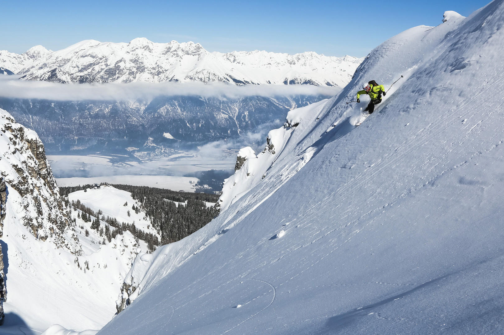
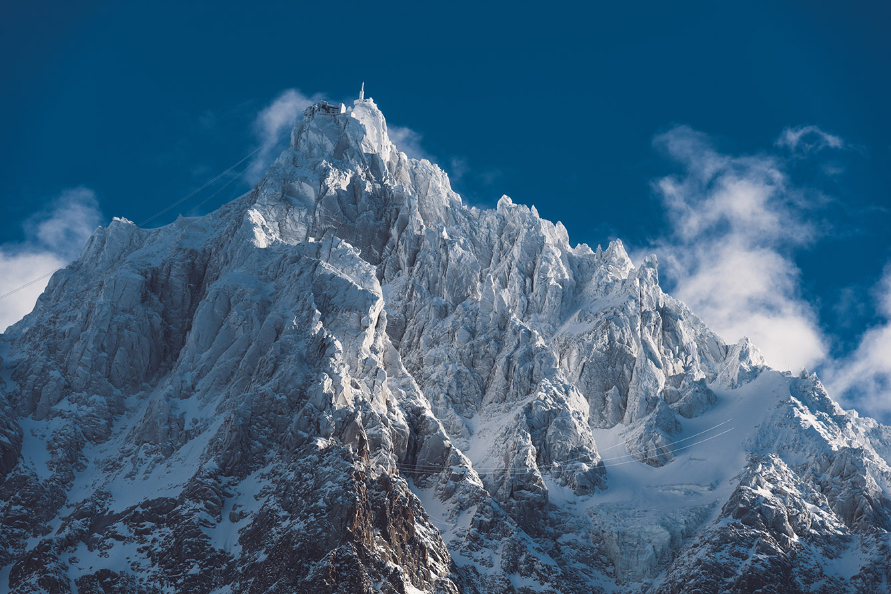

Winter mountaineering has a reputation problem. The people who do it don't talk about it enough, and the people who write about it often make it sound like a form of self-punishment that only the pathologically stubborn can enjoy. Neither is accurate. Winter mountains are genuinely different from their summer versions — more demanding, more consequential, more beautiful in ways that don't photograph well — and understanding that difference is the beginning of doing it well.
Why Winter
Three things change in winter that matter: consolidation, solitude, and consequence.
Consolidation means that snow and ice create stable, predictable (though not safe) surfaces on terrain that in summer is loose scree and unstable rock. Many routes that are objectively unpleasant in summer — scrabbling over shifting stone — become clean and enjoyable with a proper freeze. This is why experienced winter mountaineers often prefer the harder season. The terrain behaves better when it's cold.
Solitude is real and valuable. The same route that has a hundred people on it in July will have five in February. The mountain is the same mountain. What changes is the ratio of people to landscape, and with it, the quality of the experience.
Consequence is the critical difference. Mistakes that are minor in summer — a slip, a navigation error, a late start — become serious in winter. The cold amplifies everything: injury risk, recovery time, the speed at which minor problems become emergencies. This is not an argument against going. It is an argument for going informed.
Technical Basics
Ice Axe
A 60cm ice axe is the standard length for most alpine terrain. Longer axes are for glacier walking; shorter are for technical ice climbing. For general winter mountaineering, 60cm covers most situations. The skills to practice before you use one in earnest: the self-arrest (stopping a fall by driving the pick into snow) and the plunge arrest (using the spike as a brake on a descent). Both require practice in a controlled environment — a gentle snow slope with a runout — before you rely on them in the field.
Crampons
Twelve-point adjustable crampons fit most stiff-soled mountain boots. The key skill is putting them on correctly — every time, quickly, without looking down at your feet when you're on a slope — and understanding when to use them versus when to kick steps without them. As a general rule: if the slope would produce a serious fall if you slipped, put the crampons on. This is not a call for constant use. It is a call for honest assessment of what a slip would mean.
Rope Work on Snow
On glacier travel and steep snow, roping up with a partner provides a critical safety system — provided both parties know how to use it. A rope between two people who don't know how to arrest a fall is not a safety device; it is a way for one person to pull the other off a slope. Take a winter skills course before venturing onto terrain where a rope matters. The courses are not expensive and the skills transfer indefinitely.
Avalanche Awareness
This section is not a substitute for a formal avalanche safety course. It is the minimum that any winter mountaineer should know before going into avalanche terrain, which includes most slopes steeper than 30 degrees covered in snow.
- The avalanche danger scale runs from 1 (Low) to 5 (Extreme). Most fatal avalanche incidents occur at Considerable (3) or High (4) — not at the extremes. People underestimate Considerable.
- Avalanche terrain features: convex rolls (the outside of bends on slopes), leeward aspects that collect wind-deposited snow, and gullies that funnel debris. Learn to identify these before you're standing on one.
- The rescue window is narrow: 90% of people buried in an avalanche survive if found within 15 minutes. After 30 minutes the survival rate drops to roughly 50%. This is why every member of a party must carry and know how to use an avalanche transceiver, probe, and shovel. Not one member. Every member.
- A formal avalanche safety course (AIARE Level 1 in North America, SWG in Europe) takes 2–3 days and provides the decision-making framework that no article can substitute for.
"The mountain will be there next winter. You have to be too."
The Cold Start
Winter mountaineering days begin in darkness. Not "early morning" darkness but pre-dawn, headlamp darkness, when the outside temperature is at its lowest and your motivation is at its most questionable. The 4 a.m. alarm in a cold mountain hut is one of the consistent tests of character that winter climbing applies. Most people, in that moment, do not want to go. They go anyway.
The reasons for early starts are not motivational. They are structural: stable snow conditions are typically best before the sun softens the surface; on technical routes, completing the hard terrain early means descending in good conditions; in stormy weather, the clearest window is often the earliest one. The cold start is not about toughness. It is about timing.
The psychology of beginning when it's dark and cold is eased by routine. The same sequence of clothing, the same breakfast, the same gear check. Routine reduces the decision load. When your brain is cold and reluctant and the headlamp beam is the only thing between you and a very dark car park, "what do I do next" should not be a question you have to answer.

When to Turn Around
This is the hardest skill in mountaineering and the one that saves the most lives, applied honestly and consistently. The summit will not appear on your timeline, at the speed you planned, in the conditions you hoped for, every time. Sometimes the summit is not available that day. Sometimes the weather changes. Sometimes a party member is slower than planned. Sometimes the snow consolidation is wrong and the avalanche risk is not acceptable.
The decision to turn around is always available to you. It costs nothing except a deferred goal. The same route will be there next season, next year, the year after. The people who develop reputations in mountaineering for good judgment are not the people who always summit. They are the people who are still mountaineering twenty years later, with a long list of deferred objectives and a longer list of completed ones.
Before you leave the trailhead on any winter route, name your turnaround conditions out loud to your partner. Agree on them. Then hold to them when you reach them, regardless of how close the summit looks.
Ben Nevis in February: The Route That Taught Me to Read Consolidation
The northeast face of Ben Nevis in February is one of the most instructive winter venues in Britain, partly because of the routes themselves — classic Scottish grade I and II gullies that provide clean technical problems without the consequences of high-alpine terrain — and partly because the conditions are genuinely variable in ways that develop judgment faster than any single-condition environment.
I was on the Tower Ridge approach in February of my third winter season when the consolidation betrayed me. The forecasts had called for hard freeze overnight, which should have meant excellent névé — the consolidated, ice-like snow that holds crampon points cleanly and makes steep ground feel solid. What the forecast didn't fully account for was a wind direction shift that had deposited wind slab — unconsolidated snow compressed by wind into a deceptive surface that looks firm and fractures unexpectedly — on the leeward aspect of the approach gully.
I took one step onto the slab section and felt it settle with a whump sound that every avalanche safety instructor describes and that, when you hear it in the field, is unmistakable. We were not above the loading zone. We backed off the gully and took an alternative approach over firmer ground. The gully we left ran clean that afternoon — no slide — but the decision to leave was correct. The consolidation wasn't what we'd planned for. The route was different from the forecast, and the forecast was not the mountain.
The Layer System That Actually Works: Not What the Gear Guide Says
Every gear guide for winter mountaineering includes a version of the three-layer system: base layer, mid-layer, shell. This is correct and also incomplete in ways that matter at -15°C with wind. What the guides under-describe is the number of hand-warming systems required, the specific failure points of each layer, and the importance of the transition between moving and stopping.
When you're moving uphill in winter, you generate significant heat. The hardshell goes on your back or in the top of the pack. The mid-layer is open or removed. You're in a base layer in conditions where, stopped, you would freeze in minutes. Then you stop — for a navigation check, at a belay station, to look at the map — and the temperature differential hits immediately. The hardshell goes on first, before the mid-layer, because the shell traps the heat you've generated. The mid-layer over the top of the shell traps more. This seems counterintuitive and it is how it works.
Hands are the specific failure point in winter climbing. The standard approach is a three-layer system: liner gloves (thin, for dexterity when placing gear), mid-weight insulated gloves (primary working glove), and expedition mitts (the backup and summit glove). You will take off and put on gloves thirty times on a long winter day. The liner gloves allow you to clip a carabiner. The mitts keep your fingers when the liner gloves are in your pocket. Losing a glove in wind above 1,500 metres in February is a trip-ending event. The extra mitts in the pack are not optional redundancy. They are structural.
"The mountain will be there next winter. You have to be too."
— Jordan M.

What We Carried
- 60cm ice axe with wrist leash — standard alpine length; practiced self-arrest until it was reflex, not thought
- 12-point adjustable crampons with anti-balling plates — anti-balling prevents snow clumping under foot, which causes slips on mixed ground
- 50m x 8mm glacier rope, dry-treated — thinner than sport rope; sufficient for glacier travel and snow anchors
- Avalanche beacon, probe (240cm), and shovel — every member of the party; not one per group, every person
- Down belay jacket (750-fill, hood up design) — on at every stop, off before moving; the transition discipline matters
- Three-layer glove system: liner, insulated mid, expedition mitt — spare insulated glove pair in the bottom of the pack
- Neoprene face protection (balaclava + neoprene half-mask for wind) — frostbite on exposed facial skin begins faster than people expect
- Boot crampons compatibility check — crampon-compatible boots only; running shoes with crampons attached will kill you
- Head torch rated to -20°C — standard lithium batteries fail in cold; carry lithium, keep it inside jacket on very cold days
- High-calorie emergency ration (not the day's food) — separate, accessible, for the moment when everything takes longer than planned